ゲッタ〜クソゲーの墓場
ブラウザで遊べるミニゲーム集。
ゲーム一覧
-
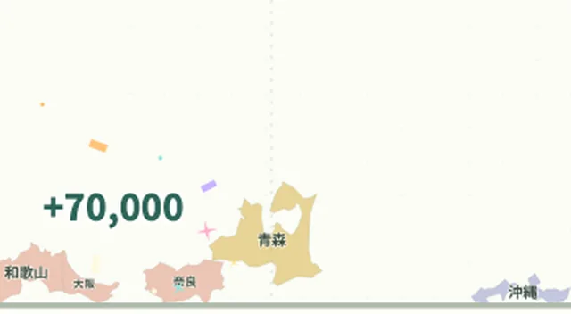
都道府県パズル
都道府県を落とし、隣り合う県を合体させるパズル。
-
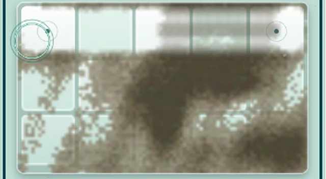
スッキリ洗浄室
タイルやコンロの汚れを水で吹き飛ばす、エンドレス洗浄ゲーム。
-
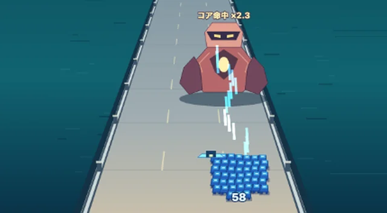
パルス・ブリッジ
攻撃をギリギリでかわし、パルス砲で巨像の装甲をぶち抜く。
-
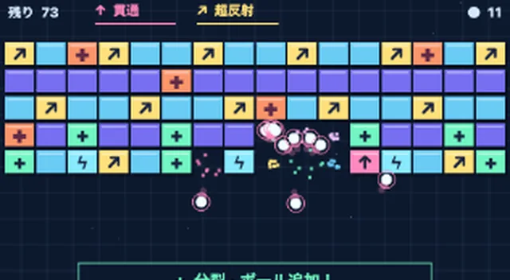
リム・ブレイカー
狙って返球し、分裂・貫通・反射・ビームで小さなブロックを一気に崩す。
-
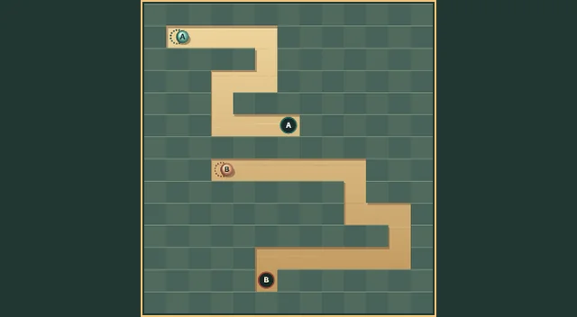
コロコロ迷路
スマホを傾けて球を穴へ。2球同時、電流壁、水運びなど全10ステージ。
-
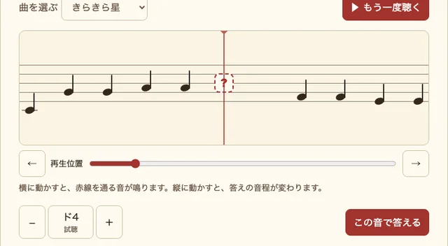
虫食いメロディー
楽器と再生速度を選んで、抜けた1音を探す。ランダム10問にも挑戦。
-
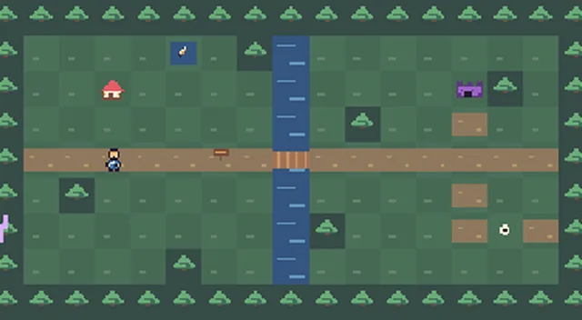
境界の魔王
正面から魔王に挑むか、バグを探すか。6つの結末とバグ図鑑を集めるドット絵RPG。
-
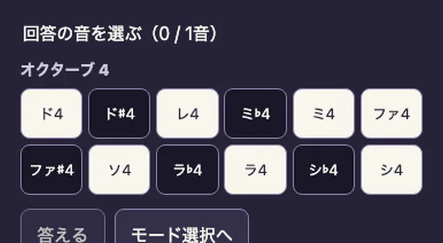
ピアノ音当て
ピアノ風の1〜5音を当てるクイズ。鬼畜モードは純音のヘルツ当て。
-
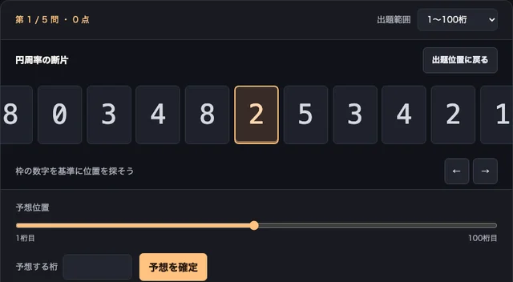
pi guesser
数字の景色から、円周率の小数点以下の何桁目かを当てる。
-
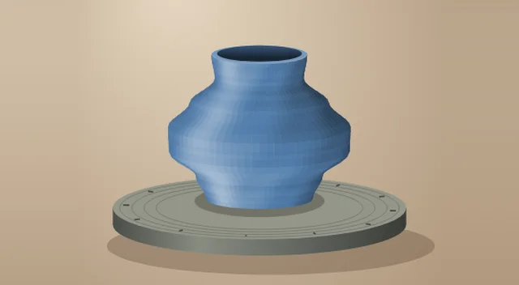
ろくろアート
回る円盤にペンで描き、渦や繰り返し模様を作る。
-
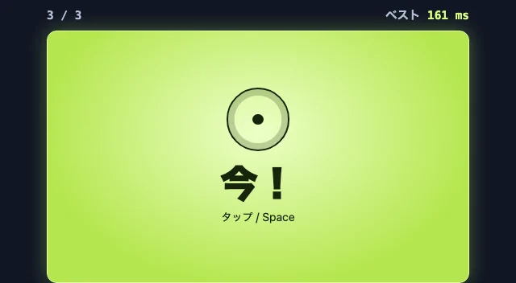
フラッシュ反射測定
光ったらタップ。3回の平均タイムで自己ベストに挑戦。